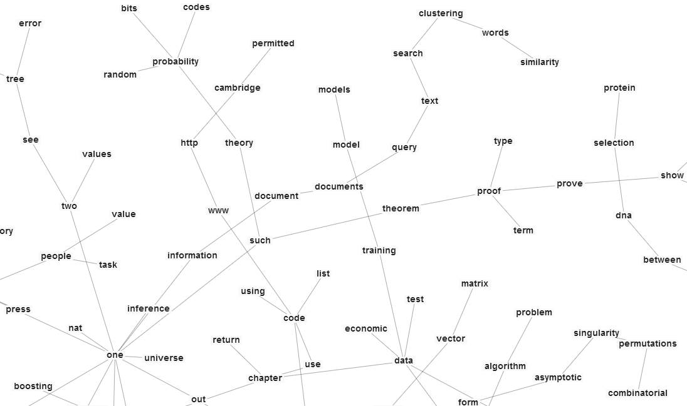
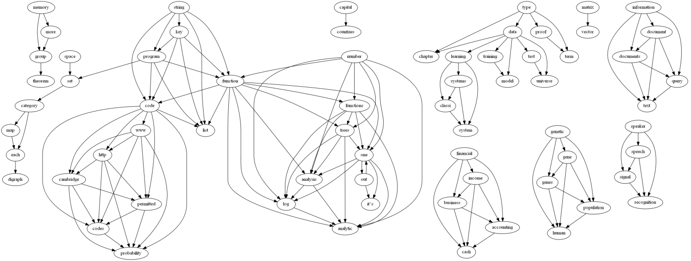

Sunday, December 08, 2013 - 12:11 AM

[tl;dr using GPU powered matrix factorization, my computer learns the relationship between words as well as the topics ranging the hundreds of pdfs on my computer: Part 1 - Motivation. You can see a spanning tree over the word association graph in all its springly wiggly glory here: http://sir-deenicus.github.io/home/wordnodes.html] Although a system meant to amplify and aid a human doesn't have as stringent a requirement on performance as AI, it still needs a decent amount of intelligence to be of any use at all.
The criteria I have settled on for this iteration are: basic knowledge of grammar and parts of speech, basic understanding of entities, the ability to extract important keywords, the ability to work with different word forms without the need of stemming, very basic abduction and the ability to detect sentiment. It doesn't have to be perfect at any of those just good enough to significantly augment my ability to both traverse and prune search spaces.
This way for example I can search for papers on personal genomics ordered by negativity or search for: 'a word related to x but sounds like y'. As well, an agent searching through Google or Wikipedia will obviously need to be able to work beyond just the word level.
Right now however, the most useful aspect is that when searching, the results are grouped by topic. Another useful aspect is the ability to search and say prioritizes science while penalizing marketing etc.
To go beyond just words to concepts I have utilized two notions which pull on the Distributional Hypothesis; which states roughly, a word derives its meaning not intrinsically but from the company it tends to keep. The first method I use, Random indexing is a dimensionality reduction technique (when the number of documents >> 1000 say) that uses 1000 dimensional+ sparse vectors to track the context for every word. It is useful because it is fast and online, allowing it to compute on the go using far, far, far less resources than matrix factorization techniques. Although I haven't used it on my full document set I have used it with individual documents. And at that level, by filtering to certain parts of speech it will associate properties that answer who or what style questions to target words. I suspect a fully trained model will also be able to do the same word vector math trick that was recently publicized by google.
The other technique I use is matrix factorization but limited only to the top 4000 words to keep thing manageable (Performance is really important to me, need it to run at decent times for a regular computer. RI can handle the full 400,000 vocabulary without even blinking). Non-negative matrix factorization in particular is useful, I use it as well to extract features representing the topics which range the documents I have.
For the past couple of years I've been downloading any paper or book that even slight piqued my interest (some free, others not, my alignment is chaotic good fwiw) with the intention that they would eventually feed a knowledge management system. I have about 2GB worth of PDFs - 1500 books and papers on various topics. I have read at most 8% of that. So I set myself a simple goal. Figure out a way to read those papers without reading them. I don't know if its possible (shoot for the moon touch the skies yadayadaya) but in the last few days, as the project becomes ever more usable, I feel like the digital equivalent of having been cured from Alzheimer's.

[tl;dr using GPU powered matrix factorization, my computer learns the relationship between words as well as the topics ranging the hundreds of pdfs on my computer: Part 2 - Details/Examples] Matrix factorization is a way of breaking up a matrix (in this case, document by word) into two so that the two pieces/factors multiply into an approximation of the original and in such a way that latent features are captured. You provide the number of features to search and one matrix ends up representing the correspondence with each word and the features and the other, the correspondence between each document and features (well in this specific case, NMF is obviously more general). It is an optimization problem to find two such matrices. One algorithm in particular that works great with documents is optimizing a matrix generalization of the relative entropy between the target and current estimation matrices.
However, at only 500 documents and 10 features (100 iterations max) my CPU (quadcore) was taking 6 mins. This did not bode well for the full 1500x40 features that was my target. Luckily, I had written a basic OpenCL transpiler on a previous Yak Shaving trip and was able to quickly convert the code to run on the GPU. The same matrix ran in 40 seconds for 10 features and 1.5 mins for 20 features (CPU was 12). The full calculation took 10 minutes or so - I don't mind such a massive calculation every couple of months (I don't look forward to when I hit ~4000 documents - about when my consumer level laptop's GPU memory will be breached. On the one hand I could divide and conquer but I expect I'll be lazy and work with Ensembles instead. Actually, I expect that might even be better for my use case).
The results were brilliant. In the below, features or topics are represented by their most associated words. What was most surprising to me was that I had somehow allowed some scifi to get mixed in and it picked up on that category! It seems the main topics I have collected are category theory, quantum physics, genetics, neuroscience, Machine Learning, finance, declarative programming and some psychology stuff. If you take a look at the sample list below and notice how good the results are, realize that I did not cherry pick!
out, one, back, time, more, now [__This is sci-fi obviously__]
------------
● Neal._Stephenson-Anathem
● Accelerando
● Bruce Sterling-Schismatrix Plus
● Linda Nagata-Memory
● PeterWatts_Blindsight
● Vernor_Vinge-Marooned_in_Realtime
● Greg_Egan-Diaspora
● Greg_Egan-Schild's_Ladder
● Greg_Egan-Permutation_City
● Greg_Egan-Quarantine
● The Metamorphosis of Prime Intellect
● incandesc
● Rapture of the Nerds
● Rule 34 - Stross
set, category, functor, sets, one, example
------------
● 1302.6946v2
● cac
● JacobsCoalgebraIntro
● Computational Category Theory
● Awodey, S. Category Theory
● ittt
● gentle into to category theory
● 10.1.1.159.2020
● CTCL
● entcs87
● Synthetic topology
● categorical programming with inductive and coinductive types
genetic, gene, genes, population, human, between, dna, selection, protein, species, evolutionary
------------
● Vincent T., Brown J. Evolutionary game theory
● 439_2013_Article_1331
● Keller_Miller_MentalDisorderEvolution_2006
● Richard_E._Neapolitan-Probabilistic_Methods_for_Bioinformatics
quantum, state
------------
● Quantum_Computing_for_Computer_Architects
● An_introduction_to_quantum_computing
● qinfandfoundsqm
● Quantum Information Theory - Timpson
women, more, social, new, such, work
------------
● Deborah Simonton-The Routledge History of Women in Europe since 1700
● Dean Keith Simonton-Origins of Genius_ Darwinian Perspectives on Creativity
● Extracognitive_Aspects_of_Developing_High_Ability
group, theorem, such, show, prove, proof, set, example, exercise, element, ring, groups, elements, linear, two, matrix, suppose
------------
● Algebra0TextboookAluffi
● ABSTRACT AND CONCRETE algebra
● Abstract Algebra book
● Elements of Abstract and Linear Algebra
● Abstract and Linear Algebra
measurement, more, people, value, one, information
------------
● How_to_Measure_Anything
● Transforming_Performance_Measurement
● Daniel_Kahneman-Thinking,_Fast_and_Slow__
● networks-book
● Steven_Skiena-Calculated_Bets
● Robert_B._Cialdini-Influence
model, models
------------
● Bayesian Reasoning and Machine Learning
● Pattern_Recognition_and_Machine_Learning
● Algebraic and geometric methods in statistics
● Algebraic_Statistics_for_Computational_Biology
learning, systems, classi, system, time [_Looks like Reinforcement Learning Here_]
------------
● Learning_Classifier_Systems
● Sequential_Decisions_Based_On_Algorithmic_Probability
● Adaptation in Natural and Artificial Systems_ An Introductory Analysis...
● RLAlgsInMDPs-lecture
capital, countries, cost, global, wealth, data, economic
------------
● Inclusive Wealth Report 2012 - Low Resolution
● Innovative_Financing_for_Development
● 115962650-GlobalTrends-2030
● TechnicalSummary_WG1AR5-TS_FOD_All_Final
In the below, document titles are followed by top features, with each feature consisting of most representative words. The first one, wp671 is titled: "Why is Consumption More Log Normal Than Income?"
"wp671"
----------
0.35 | "data | learning"
0.31 | "financial | income | business | accounting | cash"
0.22 | "data | test | universe | one"
0.17 | "distribution | gaussian"
----------
"The_Limits_of_Quantum_Computers (1)"
----------
0.5 | "quantum"
0.4 | "problem"
0.28 | "one | out | it’s"
0.27 | "theory | such
"minimumdescriptionlength"
----------
1.15 | "probability"
0.85 | "data | learning"
0.8 | "distribution | gaussian"
0.79 | "model"
----------
"AlgebraicGeometry"
----------
10.33 | "ote | ideal | sph"
10.2 | "group | theorem"
7.01 | "space | set"
5.22 | "category | map | each | functor"
"gibbs"
----------
1.17 | "model"
0.73 | "one | out | it’s"
0.7 | "distribution | gaussian"
0.59 | "probability"
----------
"Geometry_of_Information_Retrieval"
----------
5.63 | "quantum"
4.45 | "theory | such"
3.8 | "matrix | vector"
3.57 | "information | document | documents | query | text | search | clustering"
3.26 | "space | set"
----------
"Probabilistic_Methods_for_Bioinformatics...Bayesian_Networks"
----------
14.53 | "probability"
8.61 | "genetic | gene | genes | population | human"
7.91 | "each | graph"
This learned model will be useful in clustering searches, comparing documents beyond the word level and possibly (if it turns out to be needed) to train classifiers to recognize such topics out in the wild.
Thursday, December 05, 2013 - 1:12 AM
[tl;dr long post, working on tool whose goal is to exponentially reduce learning times because too much to know, too much siloing. Quotes Licklider.] Over the past couple weeks my productivity rate on a project of mine has sky-rocketed, everything clicking into place and the shape of something I have long dreamed of finally beginning to appear. The project has a modest goal: to greatly amplify the intelligence of the user. The primitive hominid form of an Exocortex if you will. It is a project that draws much inspiration from what Licklider called Man-Computer Symbiosis (the ideas have been with me even before I knew about Licklider, my original goal was a tool to make self learning easier/better but Licklider's work gave me a terminology and framework I could build around).
Here are key quotes from the 1960 document that are still very valid today:
It is often said that programming for a computing machine forces one to think clearly, that it disciplines the thought process. If the user can think his problem through in advance, symbiotic association with a computing machine is not necessary.
However, many problems that can be thought through in advance are very difficult to think through in advance. They would be easier to solve, and they could be solved faster, through an intuitively guided trial-and-error procedure in which the computer cooperated, turning up flaws in the reasoning or revealing unexpected turns in the solution.
Later on he points out that:
About 85 per cent of my "thinking" time was spent getting into a position to think, to make a decision, to learn something I needed to know. Much more time went into finding or obtaining information than into digesting it
Throughout the period I examined, in short, my "thinking" time was devoted mainly to activities that were essentially clerical or mechanical: searching, calculating, plotting, transforming, determining the logical or dynamic consequences of a set of assumptions or hypotheses, preparing the way for a decision or an insight. Moreover, my choices of what to attempt and what not to attempt were determined to an embarrassingly great extent by considerations of clerical feasibility, not intellectual capability
The main suggestion conveyed by the findings just described is that the operations that fill most of the time allegedly devoted to technical thinking are operations that can be performed more effectively by machines than by men. Severe problems are posed by the fact that these operations have to be performed upon diverse variables and in unforeseen and continually changing sequences. If those problems can be solved in such a way as to create a symbiotic relation between a man and a fast information-retrieval and data processing machine, however, it seems evident that the cooperative interaction would greatly improve the thinking process."
The emphasis is mine and also describes the key aspect of my project. The pivotal aspect being symbiosis: the object is not merely to return the best results for a query but rather to accelerate one's path in getting to the point where they can know the right questions to ask. Minimize the feedback cycle, reduce friction in interaction - the more automatic, the more likely the brain will interpret the totality of interactions as an extension of its mind. A state of flow. People think a good question answer system gives answers. No. It helps you ask better questions. This frame is what guides my hand.
Poincare anticipated the frustration of an important group of would-be computer users when he said, "The question is not, 'What is the answer?' The question is, 'What is the question?'" One of the main aims of man-computer symbiosis is to bring the computing machine effectively into the formulative parts of technical problems."
[I'll digress a bit to point out that while the earlier part of the document might have been written tomorrow, the latter parts which deal with more technical specifics haven't aged as well. One part even worries that typing might be beneath CEOs. Hah!] Licklider also explains the difference between mechanical extension and machine symbiosis. Extension still has the Controller/Servant aspect. No symbiosis, very unlikely for the whole to be greater than its sum.
"Mechanical extension" has given way to replacement of men, to automation, and the men who remain are there more to help than to be helped. In some instances, particularly in large computer-centered information and control systems, the human operators are responsible mainly for functions that it proved infeasible to automate. Such Man-Computer Symbiosis systems ("humanly extended machines," North might call them) are not symbiotic systems. They are "semi-automatic" systems, systems that started out to be fully automatic but fell short of the goal.
He also has a word for the AI folks:
In short, it seems worthwhile to avoid argument with (other) enthusiasts for artificial intelligence by conceding dominance in the distant future of cerebration to machines alone. There will nevertheless be a fairly long interim during which the main intellectual advances will be made by men and computers working together in intimate association"
The 15 may be 10 or 500, but those years should be intellectually the most creative and exciting in the history of mankind.
I'll be focusing my future writings on the project. I've been thinking on both the technical and philosophical aspects of the project. The latter being needed to stand as a guide for consistency, a framework of key definitions and principles that aid. Feedback, interaction, connections.
One advantage of IA is the intelligence of the machine doesn't need to be as polished as with AI; since we combine the brilliant, flexible pattern matching but error prone aspect of a brain with the rigid, precise calculating and clerical ability of a machine.
I'm not the only one working on such a tool, I know Palantir (and no doubt the NSA) is quite advanced in area. Things like the Remembrance Agent are ancient and Evernote (heavy user of) is in the same genre. The focus of mine is the autodidact, I care about interaction, framing and implementation as key - not some Chef Boyardee after thought, second to publishing or theory. Neither am I beholden to the whims of a project manager or uncertain customer. I'm merely a life long self learner that has identified key bottlenecks they would like removed. And indeed, I am already beginning to confirm pulling at those spots will lead to outsized improvements in process. I write this for myself but I hope it may one day reach the point of utility for others.